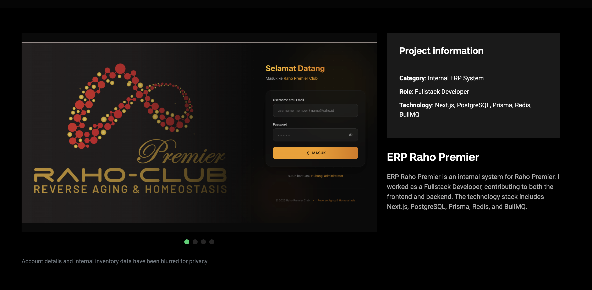

Fullstack Developer
ERP Raho Premier
Centralizes inventory, logistics, purchasing, permissions, and integrations in one internal operations workspace.
Impact summaryInternal system
- 06
- Interface scopes
- 03
- Operational areas
- Full-Stack
- System delivery
My contributionProject planning · System architecture · Frontend · Backend
Next.jsPostgreSQLPrismaRedis / BullMQ
Explore the ERP project